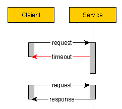
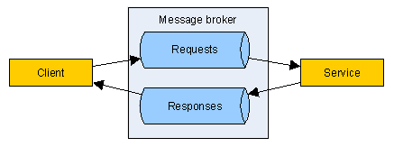
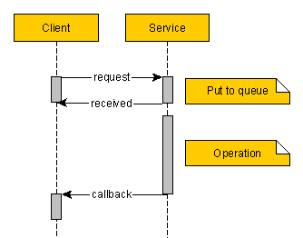
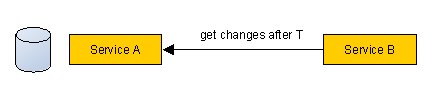

Resiliant services communication
Imperfection of the world
Microservices style of software architecture is getting more popular these days. Instead of one monolithic application you create number of services that communicate with each other.
If our world was perfect, all the services would respond instantly and without errors. But in the real world it’s very common when:
- service return an error
- service respond too slow, causing timeout
- network error doesn’t allow client receive successful response from service
We have to be prepared for such things if we want our system to be resilient and fault-tolerant.
Synchronous REST service
This would be the first and simplest approach. Client calls service and waits for response. Say, we are creating user account. What if we get timeout or some other unexpected error while calling the service? Was account created or not?
If we retry our call we can get a duplicate. Or service must have some checks to return error instead of creating duplicate and client have to deal with this error somehow. Things are getting quite complicated. Concept of Idempotency can help in this case .
Idempotence is the property of certain operations, that can be applied multiple times without changing the result beyond the initial application

We can build our service in such way, that instead of creating duplicate, it would return result of previously completed operation. Client just need to continue calling service until it get successful response.
Messaging approach
Synchronous REST approach have problem with the duration of operations. Connection must be open all the time while operation is running, wasting resources both on client and server. Furthermore, some operations can take minutes, hours or even longer. For such cases messaging is more appropriate solution. Instead of waiting for whole operation to complete, service puts incoming message to queue and immediately responds to client. Only when operation is completed, services notifies client of the result.
Messaging with broker

Client and service communicate through broker-mediator, such as ActiveMQ or RabbitMQ.
Client puts requests to one queue and subscribes for responses. Service takes requests from incoming queue and puts responses to another.
Such system is fault tolerant, it’s easy to do load balancing, just subscribe another service instance to incoming requests.
But broker is a weak spot, it’s reliability and performance are very important. Also, it’s hard to replace broker implementation.
Messaging with callback

Another option is to hide broker implementation inside our service, or to build some custom internal queue implementation. Client call the service and tell it the URL where to send results of operation.
Feed polling

For some cases you can try inverted approach. Instead of service A sending messages to service B, B can periodically ask A, if it has some new messages. For example, user changes address at service A, and you need to transport this change to service B. B periodically makes requests to A, asking, give me all the changes that have happened after time T. You don’t need any extra queues, list of users is already stored at service A with times of last modification. Changes won’t be delivered online, but it’s not always necessary.
Whatever approach your choose, always ask yourself, how your system will behave if something goes wrong.